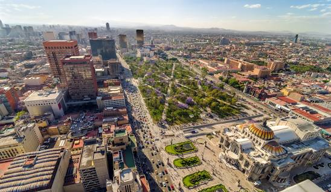

Tudo sobre o turismo no México
O turismo no México de forma geral, figura como uma relevante atividade econômica para o México, o qual ocupa um lugar de destaque nesse seguimento em escala mundial, ficando na oitava posição em relação à quantidade de turistas estrangeiros que visita o país. No âmbito regional, o México é o que atrai mais turistas dentre os países latino-americanos, com fluxo girando em torno dos 4 milhões ao ano. A principal clientela são turistas de origem norte-americana, que respondem por 80% dos visitantes, resultado da proximidade existente entre os dois países. Ao receber um elevado número de visitantes, o México lucra significadamente, tendo em vista que os turistas gastam cifras elevadas, cerca de 4 bilhões de dólares a cada ano. Este país atrai os turistas por meio de paisagens culturais, como a cidade do México, a mais visitada dentre as cidades. Além de arquiteturas históricas como as ruínas arqueológicas, oriundas da cultura Mesoaméricana. O país apresenta, ainda, diversas paisagens naturais, especialmente litorâneas, como: Acapulco e Cancun, com exuberantes praias. Por causa do destaque da indústria do turismo no país, as lideranças políticas têm direcionado um grande volume de investimentos na modernização da infra-estrutura que envolve a atividade, como em: portos, aeroportos, rodovias. Além disso, o governo oferece condições para o desenvolvimento do setor hoteleiro, com objetivo de disponibilizar um serviço de qualidade aumentando, assim, o fluxo de turistas para o país.
Capital do México
Nossa primeira parada não poderia ser em outro destino senão na capital do país. Conhecida como “a metrópole que tem tudo”, a Cidade do México tem opções para todos os gostos e bolsos. Na cidade você vai encontrar redutos boêmios com bares e restaurantes tradicionais, palácios luxuosos, vida noturna agitada, e até mesmo cantinas típicas. Não à toa, ela é conhecida como uma das cidades mais divertidas do mundo. Entre os pontos turísticos não deixe de conhecer Castelo de Chapultepec, Museo Frida Kahlo, Palácio Nacional e as Pirâmides de Teotihuacán.